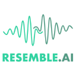
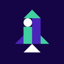
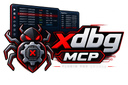
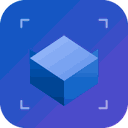
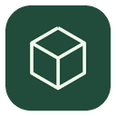
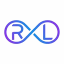

AI agent tools launched this week (Oct 26 – Nov 1, 2026)
280 tools added Oct 26 – Nov 1, 2026. Page 1 of 3. Ranked by votes this week, then by the date added. Top: StoreInspect MCP, Sickle, Resemble Agent Detection.
Quick answer: The newest additions on this page are StoreInspect MCP, Sickle, Resemble Agent Detection. This page covers tools launched this week. Vote counts start at zero and come from the server, one vote per visitor per day. Ties stay in the order the tools were added, newest first.
New toolsSubmit freeFast-Track ($15)
Page 1 of 3Next
- 1
StoreInspect MCP
Remote MCP server that lets ChatGPT, Claude, Cursor and Codex search 2.3M+ Shopify stores by the apps they have installed or are missing, filtered by country, category, traffic and Shopify Plus, enrich a store or a list of domains with apps, theme, pixels and traffic tier, and preview then reveal decision-maker contacts only after explicit confirmation. Free plan with 10 reveals a month; Pro is $99/month.
More+0 todayView - 2
Sickle
Native macOS mail client that puts Gmail, Outlook, iCloud, Fastmail and any IMAP account in one window with a colour per mailbox and an email cleaner, plus a hosted connector (MCP server) so Claude and other AI agents can search, read and work across every mailbox you add, from any OS. 7-day free trial, then $8.99/month or $30/year including the connector.
More+0 todayView - 3

Resemble Agent Detection
Behavioral detection service from Resemble AI that tells websites and apps whether each session is a human, a classic bot or an AI agent such as ChatGPT agent, Claude in Chrome, Browser Use or Playwright automation. A tag-manager snippet feeds cursor movement, typing rhythm, clicks and scrolling to Resemble's System One model instead of trusting spoofable user-agent strings, and per-page rules decide what agents may do. Free account to start.
More+0 todayView - 4

DeployHQ MCP Server
DeployHQ's hosted MCP server at mcp.deployhq.com: add one URL to Claude Code, Codex, Gemini CLI or Cursor, sign in to DeployHQ in the browser and ask in plain language what is deployed where, which deployments failed and how servers and auto-deploy are configured. Read-only at launch with six tools (accounts, projects, servers, deployments) and scoped to what your DeployHQ user can already see; no package or API key to manage.
More+0 todayView - 5
Answer Me with HTML
Agent skill that makes Claude Code, Codex and other coding agents answer hard questions as a readable one-page HTML document with diagrams instead of a wall of text. The model writes only a short Markdown draft and a bundled Node CLI renders the SVG, CSS and layout in about 50 ms, which the project's benchmark shows cuts output tokens about 8x and response time about 2.6x versus asking for HTML directly. MIT.
More+0 todayView - 6

yovoice
Local-first audio and music studio for macOS, Windows and Linux that runs text-to-speech, zero-shot voice cloning, emotional delivery controls, full songs with lyrics and General MIDI score arranging entirely on your own GPU or CPU via a native C++ engine, with a CLI, agent skill and API/MCP deployment option. Apache-2.0.
More+0 todayView - 7

x64dbg-MCP Server
Native Zig plugin for the x64dbg Windows debugger that exposes 84 MCP tools over Streamable HTTP and SSE, so an AI assistant can set breakpoints, step, read and patch memory, inspect registers, modules, threads and PE headers, scan patterns and dump modules for agentic reverse engineering. Single binary, no .NET or Python runtime. MIT.
More+0 todayView - 8
TulipFarm
Open-source workspace that puts a company's records, docs, agents and workflows in one place so agents work from the same information as the team. Ask in Slack or chat, a built-in assistant called Bud and saved agents do the work, and you choose which actions wait for a human OK. AGPL-3.0, with TulipFarm Cloud in public beta.
More+0 todayView - 9
Talorys
Free personal AI assistant that deploys with one command (npx create-talorys) into your own Cloudflare account, with no server, database or account run by its developers. It chats with streaming replies, keeps editable long-term memory, manages tasks, notes and projects, and runs scheduled reminders and routines. MIT.
More+0 todayView - 10
Superior Trade Terminal
Self-hostable AI trading terminal for Hyperliquid: sketch where you think price is going on the chart and the agent returns a rated setup with entry, stop and target, ranks alternatives and writes the Freqtrade strategy for the one you choose, refusing unsafe setups. Also offers a hosted build and a skill for agent-only trading. Apache-2.0.
More+0 todayView - 11
Spark-X2.6
Spark-X2.6 is a pair of compact 4B and 1.7B open-weight language models built for on-device agents, sharing Spark-X2.5's architecture but with new post-training that improves tool use, multi-step planning, coding, long context and multilingual tasks. Apache-2.0.
More+0 todayView - 12
Pi-Bolt
The Pi terminal coding agent compiled ahead of time into one native executable for Linux, Android (Termux), Apple-silicon macOS and Windows, with no Node.js or Bun needed. It keeps Pi's commands, sessions, providers and extensions while starting about 10x sooner and using far less CPU and memory in the project's published benchmarks. MIT.
More+0 todayView - 13
Open Reality
Turns a handheld phone video into a persistent, queryable 3D scene and exposes it to Claude Code, Codex or Cursor through an MCP server: agents can measure distances and angles, plan paths through scanned free space and export LeRobot, GR00T, Isaac Sim or MuJoCo training data. BSD-2-Clause, self-hostable or hosted.
More+0 todayView - 14
Audio Studio MCP
MCP server that gives Claude Code, Claude Desktop, Cursor and other MCP clients a local sound studio: generate background music, instrument loops and sound effects from a sentence with Stable Audio 3, re-style or extend clips, then make seamless loops, set LUFS loudness and export WAV, OGG or FLAC. Runs on Apple Silicon (MLX) or NVIDIA GPUs with no API key. MIT.
More+0 todayView - 15
lowtouch.ai
lowtouch.ai deploys production AI agents on private infrastructure with human approval, ISO 27001, and SOC 2 controls.
More+0 todayView - 16
Zerostack
Lightweight coding agent written in Rust, optimized for memory footprint and performance
More+0 todayView - 17
Zeroshot
Open-source orchestration for coding agents. Define your own workflows, reviewers and repair loops.
More+0 todayView - 18
Zenskar
Zenskar is billing and revenue-recognition software whose agents rate usage and help close the books
More+0 todayView - 19
Yuxi
： RAG、 、 、MCP/Skills、 。Yuxi = Cloud Agents + Knowledge RAG, Self-hosted knowledge agent platform for RAG, knowledge graphs and multi-agent workflows
More+0 todayView - 20

Xpander.ai
Run and govern enterprise AI agents and employee AI inside your own environment, on any model. AI gateway, MCP gateway, agent runtime, and AI workspace in one platform
More+0 todayView - 21
XRP Community Wallet
Fully decentralized and the most secure XRP & EVM wallet - built by the community, for the community
More+0 todayView - 22
Wslmanager
GUI for the Windows Subsystem for Linux — and native Linux/macOS VMs on Mac. Install, back up, move and configure distros without CLI flags; AI assistant with tools, MCP server for agents, remote WSL over SSH
More+0 todayView - 23
Worldmonitor
Real-time global intelligence dashboard. AI-powered news aggregation, geopolitical monitoring, and infrastructure tracking in a unified situational awareness interface
More+0 todayView - 24
Wolfia
Wolfia answers security questionnaires and reviews contracts for vendor and compliance work
More+0 todayView - 25
Webiny Js
Open-source, self-hosted CMS platform on AWS serverless (Lambda, DynamoDB, S3). TypeScript framework with multi-tenancy, lifecycle hooks, GraphQL API, and AI-assisted development via MCP server.
More+0 todayView - 26
Waoowaoo
AI 。Industry-first professional AI Agent platform for controllable film & video production. From shorts to live-action with Hollywood-standard workflows
More+0 todayView - 27

Waku Agent
Waku Waku! Waku Agent is a local-first AI agent harness you actually own, including loop, memory, eval, all in code built to stay legible as it grows
More+0 todayView - 28
VoiceMem
Infrastructure for the next generation of voice agents, designed to provide universal memory. It is divided into a left brain and a right brain, storing information and emotions respectively, while a.
More+0 todayView - 29
Voice AI
Rapida is an open-source, end-to-end voice AI orchestration platform for building real-time conversational voice agents with audio streaming, STT, TTS, VAD, multi-channel integration, agent state.
More+0 todayView - 30
Vinsi
VINSI is the all-in-one AI SaaS platform for premier AI voice agents, CX automation, CRM, workflows, ticketing, QA, analytics, and more. We deliver a powerful, secure AI ecosystem built to help you dominate any industry
More+0 todayView - 31+0 todayView
- 32
Video Shotcraft
AI video skill for Claude Code & Codex — cinematic product videos with Remotion: 152 shot recipe cards, 209 motion previews, a production-ready template
More+0 todayView - 33
Versus Incident
The self-hosted AI SRE agent. You don't have to monitor your systems alone. It helps an agent inspect infrastructure, incidents, or delivery pipelines.
More+0 todayView - 34
Unreal MCP
A comprehensive Model Context Protocol (MCP) server that enables AI assistants to control Unreal Engine through the native C++ Automation Bridge plugin. Built with TypeScript and C++
More+0 todayView - 35
Tuui
A desktop MCP client designed as a tool unitary utility integration, accelerating AI adoption through the Model Context Protocol (MCP) and enabling cross-vendor LLM API orchestration
More+0 todayView - 36+0 todayView
- 37
Toonflow App
、 Toonflow： AI ， 、 、 、 。 、AI Agent ， 、 、 、MCP 。Open-source AI short drama and motion comic creation tool with an infinite canvas, AI agents, storyboarding, image and video generation. Self-hosted and.
More+0 todayView - 38
Tofu
Puts apps made with Claude Code, Codex, Cursor and other coding agents online from one pasted message: hosting, a managed database, custom domain, Google sign-in, user emails and analytics in a single account. Free.
More+0 todayView - 39
Thefoundryai
Produce high-quality enterprise data, evaluate reliably, and optimize performance at scale—without web drift, IP bans, or rate limits. Foundry provides deterministic web snapshots, structured error.
More+0 todayView - 40
TestSprite
TestSprite is an agentic testing tool that writes and runs end-to-end tests after code changes
More+0 todayView - 41
Terravision
Cloud architecture diagrams in both directions: AI prompt or JSON to diagram, diagram to Terraform via MCP server, and Terraform to diagram via CLI or CI/CD. Using Official AWS, Azure and GCP icons
More+0 todayView - 42
Temps
AI-native open-source alternative to Vercel + Sentry + PostHog + Pingdom + Resend + E2B. 440+ CLI operations with drop-in skills for Claude Code, Codex & OpenCode — deployments, analytics, session.
More+0 todayView - 43
Teaql Agent Kit
A model-driven harness for AI coding agents: semantic modeling, app generation, progressive API Assist and evidence-based verification
More+0 todayView - 44
Taxxa
Taxxa is an AI workspace for accountants, auditors, and payroll teams. It handles bookkeeping, billing, tax, or close work for a person to review.
More+0 todayView - 45
TaxGPT
TaxGPT is an AI tax assistant for accountants that researches questions and helps prepare returns
More+0 todayView - 46
Switch
Connect any AI agent to your team in Slack, Teams & Discord. Open-source and self-hostable
More+0 todayView - 47
Surf
Surf is a computer use AI agent powered by OpenAI that interacts with a E2B's virtual desktop environment through natural language instructions
More+0 todayView - 48
StudyPal
StudyPal is an AI study buddy that builds a personal study plan from what you are learning
More+0 todayView - 49
Stop That Shit
Stop That Shit（ ）｜ Codex/GPT Hook + Skill Guard： AI coding agent 、 。 A multi-platform Hook + Skill Guard for AI coding agents in Codex/GPT workflows: stop unrequested hashes, checksums, and task-scope creep
More+0 todayView - 50
SproutsAI
SproutsAI is an AI recruiting platform and ATS that sources, screens, and ranks candidates
More+0 todayView - 51

Sphere
A Web3 wallet and agent platform for the Unicity network - crypto wallet, DMs, group chat, and marketplace
More+0 todayView - 52
Spec Kitty
Spec-Driven Development with organizational governance. Specs tell AI agents what to build; Charter governs how they build it.
More+0 todayView - 53
Snappy Learn
Snappy Learn is an AI learning tool that turns study material into a faster practice loop
More+0 todayView - 54
Skima
Skima screens and matches candidates inside the ATS you already use and returns a same-day shortlist
More+0 todayView - 55
Siyuan
An open-source, privacy-first, self-hosted knowledge workspace where humans and AI agents work together 、 、 ，
More+0 todayView - 56
SigNoz MCP Server
Official SigNoz MCP server that lets AI agents query metrics, traces and logs in natural language, investigate alerts and manage dashboards, alert rules, saved views and notification channels, for both SigNoz Cloud.
More+0 todayView - 57
ShopChief
ShopChief is an AI agent workspace for global sellers covering store ops, listings, and marketing
More+0 todayView - 58
Sentient Os
An on-device LLM understands your entire life, then proactively offers to get your work done through computer use
More+0 todayView - 59
ScribeMedical
ScribeMedical is an AI medical scribe that drafts clinical notes for a clinician to review
More+0 todayView - 60
ScienceClaw
Verifiable program-level self-evolution for AI-for-Science agents: Skills and typed Operators grow from replay-verified executions
More+0 todayView - 61
Schedx
SchedX is an AI Inbound SDR that talks to your website visitors, answers their questions, qualifies them, books meetings, and routes them to the right sales rep
More+0 todayView - 62

Sceneview
3D & AR SDK for Android (Jetpack Compose + Filament), Apple (SwiftUI + RealityKit), Web, Flutter and React Native. Opens glTF/GLB, 3MF, STL, OBJ and PLY on Android and USDZ on Apple, at real size in AR.
More+0 todayView - 63
Sandlock
The lightest AI sandbox. A process-based sandbox for Linux, no container, no VM, no privilege, no prompt injection
More+0 todayView - 64

Sandboxd
Open-source, self-hosted AI app builder — an agent builds real apps in isolated sandboxes on your own server, each live at a preview URL. Self-host in one command.
More+0 todayView - 65
Saiku
Saiku is an open-source semantic layer that serves Excel, dashboards, and AI agents over MCP
More+0 todayView - 66
Ruoyi AI
Enterprise-grade AI agent framework with multi-provider LLM management, secure knowledge bases and high-precision RAG, visual workflow orchestration, and multi-agent coordination
More+0 todayView - 67+0 todayView
- 68
Redamon
Open-source, self-hosted AI penetration testing framework: maps your attack surface into a graph, autonomously exploits it from a Kali sandbox with human approval gates, and opens PRs that fix what.
More+0 todayView - 69
Recruit CRM
Recruit CRM is an ATS with AI agents that source candidates, run outreach, and move applicants through hiring
More+0 todayView - 70
Rapid MLX
Rapid-MLX is an open-source (Apache 2.0) OpenAI- and Anthropic-compatible LLM inference server for Apple Silicon, built on MLX, focused on reliable tool calling for coding agents. Up to 4× faster.
More+0 todayView - 71

RPent
RPent is agentic infrastructure for the physical world, connecting language agents to embodied systems
More+0 todayView - 72
RP1
RP1 is an open-source full-stack platform for agentic humanoid robots. It connects an agent to robots, simulation, or physical-world control.
More+0 todayView - 73
Quto AI
Quto AI builds done-for-you AI voice agents and WhatsApp automation — conversational AI agents across voice, WhatsApp, chat and web that book, qualify and support your customers 24/7
More+0 todayView - 74+0 todayView
- 75
QA Agent
QA Agent is an open-source Playwright library for AI browser regression testing. An agent writes, runs, or maintains tests and reports what broke.
More+0 todayView - 76
Py Gpt
Desktop AI Assistant powered by GPT, Gemini, Claude, Grok, Ollama, DeepSeek, Perplexity, and more - chat, agents, tools, MCP, plugins, RAG, vision, voice, image and video generation, speech synthesis.
More+0 todayView - 77
Proxima
Multi-AI MCP Server - Connect ChatGPT, Claude, Gemini & Perplexity to your coding tools without any API
More+0 todayView - 78
 +0 todayView
+0 todayView - 79
Promarkia
Start with ready-to-run AI marketing squads, then use Promarkia Studio to build custom agents, squads, visual workflows, and trigger-driven automations
More+0 todayView - 80
Pocket Invoice MCP
Pocket Invoice MCP lets an assistant create invoices and estimates and generate PDFs
More+0 todayView - 81
Pipelock
Open-source AI agent firewall for MCP security and agent egress. Scans mediated HTTP, MCP, A2A, and WebSocket traffic for exfiltration, SSRF, and prompt injection, and emits mediator-signed action.
More+0 todayView - 82
Phantom
An AI co-worker with its own computer. Self-evolving, persistent memory, MCP server, secure credential collection, email identity.
More+0 todayView - 83
Pete Gabi
Pete & Gabi delivers AI interview agents for candidate screening and AI calling solutions for inbound calls, outbound outreach, customer support, appointment scheduling, and business phone automation
More+0 todayView - 84
Pentest AI Agents
Turn Claude Code into your offensive security research assistant. Specialized AI subagents for authorized penetration testing plan engagements, analyze recon, research exploits, build detections.
More+0 todayView - 85
PI Desktop
Local-first AI coding agent desktop: Electron + Rust host core + pi Agent Harness + user-installable plugins
More+0 todayView - 86

PGX
Lightweight Postgres-compatible database written in Rust that gives every coding agent its own disposable Postgres: one runtime hosts thousands of isolated databases, installs as a Claude Code plugin or Agent Skill.
More+0 todayView - 87
Ovis
Free client for the herdr agent multiplexer that lets you read and answer Claude Code, Codex and every other agent pane on your computer from a phone, desktop app or any browser, either as a chat with tap-to-approve.
More+0 todayView - 88
Oracle AI Developer Hub
Technical resources for AI developers to build applications, agents, and systems using Oracle AI Database and OCI services
More+0 todayView - 89+0 todayView
- 90
OpenStatus
OpenStatus is an open-source status page and incident-response tool with an MCP server for agents
More+0 todayView - 91
OpenRath
An open-source, PyTorch-like runtime for dynamic multi-agent and multi-session workflows
More+0 todayView - 92

OpenMetadata
The Open Context Layer for Data and AI , OpenMetadata is the open platform for building trusted data context and business semantics for humans, AI assistants, and agents
More+0 todayView - 93
OpenContracts
OpenContracts is an open document-intelligence platform for agentic work on legal documents
More+0 todayView - 94+0 todayView
- 95
Omniclaw
The first agentic payment network: policy-controlled, gasless, and real money-ready. OmniClaw CLI + Financial Policy Engine let autonomous agents pay and earn safely at machine speed
More+0 todayView - 96
Ollaya
Jev-compatible API server for open decision models. Ollama for decision models: pull and serve 29 model families (Laya, pplx-decider, Clef, Winnow, coba...) locally or self-hosted behind /v1/systemone.
More+0 todayView - 97
Okou
Okou connects to the tools your team already uses and does the work — across marketing, sales, engineering, and operations, under your control
More+0 todayView - 98
Oil UI
UI design skill for Claude Code, Codex and other coding agents that explores several distinct visual directions, compares them side by side and refines the chosen one against real screenshots. Free open-source skill.
More+0 todayView - 99
Oh My Agent
A specialist team for the coding agent you already use: 12 roles, 21 workflows and 33 skills that plan, build in parallel, review and debug, leaving plans, ADRs and results as files. Gates wait for your own tests.
More+0 todayView - 100
OfficeCLI
OfficeCLI is the first and best Office suite purpose-built for AI agents to read, edit, and automate Word, Excel, and PowerPoint files. Free, open-source, single binary, no Office installation required
More+0 todayView
Page 1 of 3Next